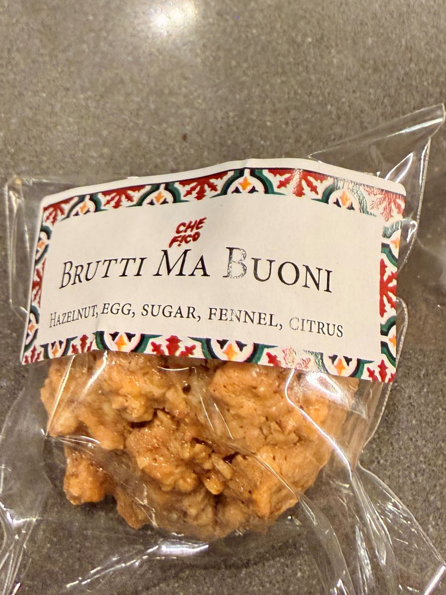

There's a kind of Italian cookie that doesn't bother pretending to be beautiful. Brutti ma Buoni — "Ugly but Good" — is all craggy edges, toasted nuts, and rustic confidence. The name says almost everything you need to know: these aren't cookies designed for the display case. Their appeal is what happens when you break one open and taste it.
My first real introduction to them wasn't in Italy, but at Che Fico in San Francisco, where they arrived quietly with the check. No fanfare, no flourish — just a small, perfect bite that somehow tasted even better with coffee the next morning.

Their version was unforgettable: small, dense, deeply nut-forward, and carrying a subtle warmth you only noticed after the second bite. That warmth was fennel — not enough to shout, just enough to hum beneath the hazelnuts. It was the kind of detail that told you someone in the pastry kitchen knew exactly what they were doing.
A Cookie With More Than One Story
The more you learn about Brutti ma Buoni, the harder it becomes to talk about the recipe. There isn't really one.
Brutti ma Buoni are found in several parts of Italy, with particularly strong traditions in the north, including Piemonte and Lombardia, and with other regional versions appearing farther south. The exact origin is part of the fun: different places have their own histories, their own names, and their own ideas about what makes a good one.
Some versions are made with hazelnuts, others with almonds or different nuts. Some are lighter and more meringue-like; others are dense and chewy. Flavorings change, too. Citrus, vanilla, spices, and other aromatic touches can all find their way into the mixture. What looks like one cookie from a distance is really a family of cookies once you start paying attention.
That is one of the things I love about Italian cooking. Tradition doesn't always mean one recipe written in stone. A dish can belong to a region, a family, or a particular bakery while still leaving room for interpretation. The ingredients may be simple, but the decisions made along the way become part of the identity.
Brutti ma Buoni are a wonderful introduction to that idea. They don't need elaborate decoration. They don't even particularly care what they look like. What matters is the relationship between toasted nuts, sugar, egg whites, heat, and technique.
Small Changes, Very Different Cookies
Once you start making them, you discover just how much those choices matter.
Three egg whites and four egg whites may both produce perfectly good Brutti ma Buoni, but they don't necessarily produce the same cookie. Less egg white gives you a denser, chewier mixture with more of the nuts at the center of the experience. More egg white creates a little more lift and a lighter result.
The amount of sugar changes the balance, too. Less sugar lets the toasted hazelnuts come forward. More sugar brings additional sweetness and more opportunity for caramelization. Even the way the nuts are chopped changes what you notice when you take a bite.
And then there is the cooking.
That part is easy to overlook if you're expecting a conventional meringue cookie. In versions like the one we're making, the mixture is cooked gently on the stovetop before it ever reaches the oven. Slowly, it loses moisture and becomes thick enough to hold its shape. The result is much more compact and chewy than the puffed, airy cookie we first made at home.
This is where technique becomes tradition. The ingredients may look familiar, but the method tells you what kind of cookie you're actually making.
And that is why a recipe like this is worth paying attention to. The goal isn't simply to reproduce a list of ingredients. It's to understand what each ingredient and each step is doing, and then decide which version you want to make.
Che Fico, and an Unfinished Visit
We never got the chance to go back to Che Fico before we left San Francisco.
In June 2026, a fire that began in the neighboring Foghorn Taproom spread to Che Fico's roof area and forced the restaurant to close temporarily. No one was injured, and Che Fico has since announced plans to reopen on Divisadero.
There are restaurants you remember because of a spectacular meal. There are others you remember because of something much smaller: a particular table, a dish you weren't expecting, or a cookie that arrived with the check.
Che Fico is one of those places for us. We left San Francisco with the memory but never got the chance for that last visit.
When we go back to the city, we'll go back to Che Fico. Once they're open again, we'll make our way to Divisadero, sit down, order something wonderful, and see whether those little Brutti ma Buoni are still waiting at the end.
Our Version
Last Christmas, I tried to recreate them.
I found a recipe online that looked promising — similar ingredients, similar method — but it leaned more toward meringue. The cookies puffed more, spread more, and lacked the tight, chewy structure I remembered from Che Fico. They were good, but not those cookies.
And they were definitely larger than the tiny, confident bites we'd been given with the check.
That first attempt sent me back to the question that makes these cookies so interesting in the first place: which Brutti ma Buoni were we actually trying to make?
The answer became clearer as we experimented. We wanted the toasted hazelnuts to be the main event. We wanted the sweetness restrained. We wanted the cookies small. We wanted enough fennel to give them that subtle aromatic warmth, but not so much that they wandered into pizzelle territory. And most importantly, we wanted that dense, chewy texture rather than a cloud of meringue.
So this recipe isn't presented as the Brutti ma Buoni recipe. It is our attempt at a particular one — the cookie we remember from Che Fico, filtered through our own kitchen and our own experiments.
That feels appropriate for a cookie with so many Italian variations. Tradition gives you the starting point. Your kitchen gives you the rest.
Ready to make them?
Our Brutti ma Buoni recipe keeps the hazelnuts front and center, uses just enough fennel to give them their distinctive warmth, and gives you room to choose between a denser or slightly lighter cookie.
View the Brutti ma Buoni Recipe →